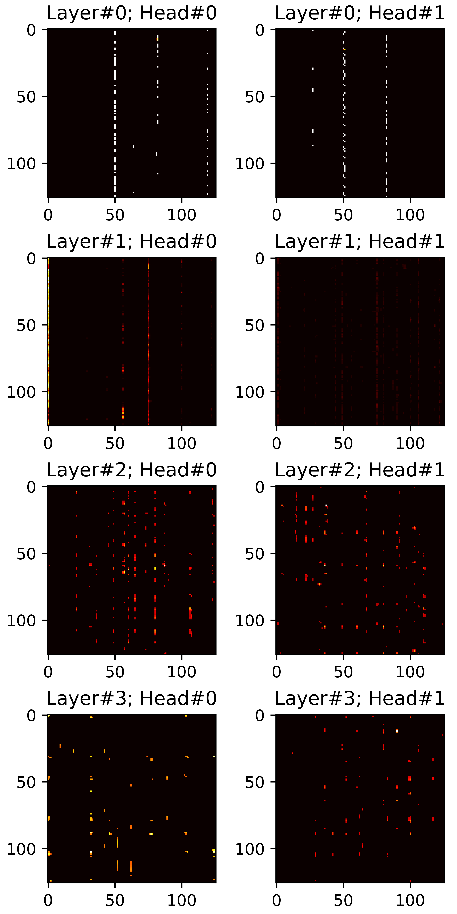
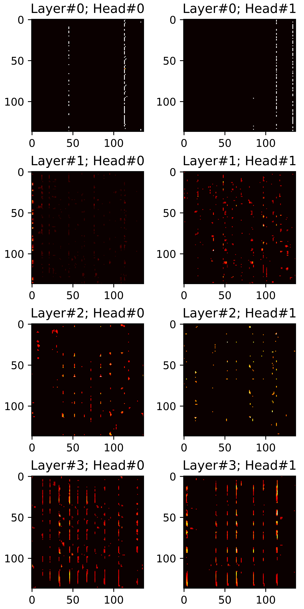
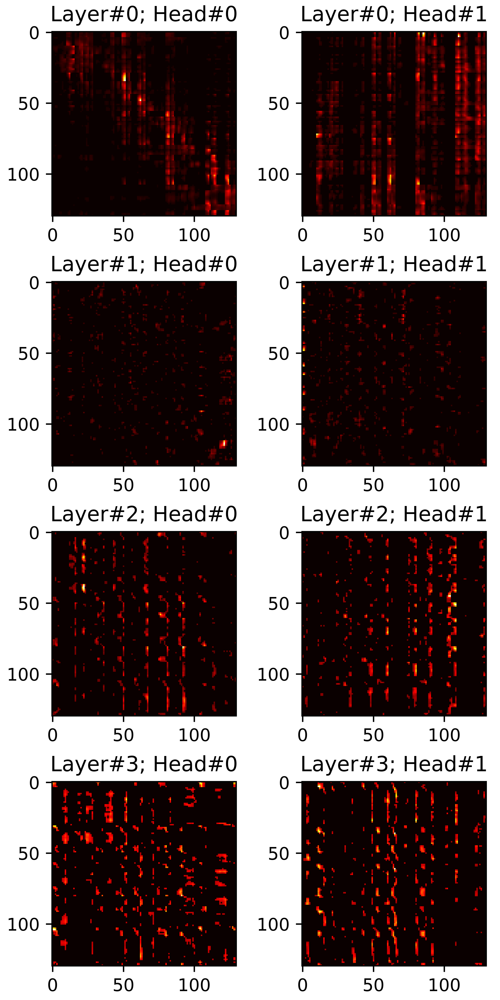
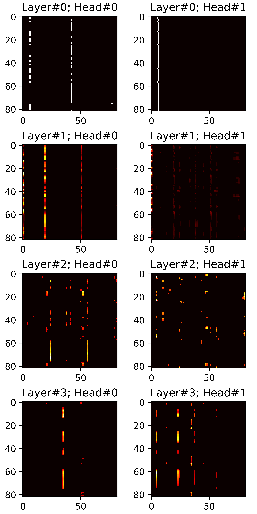
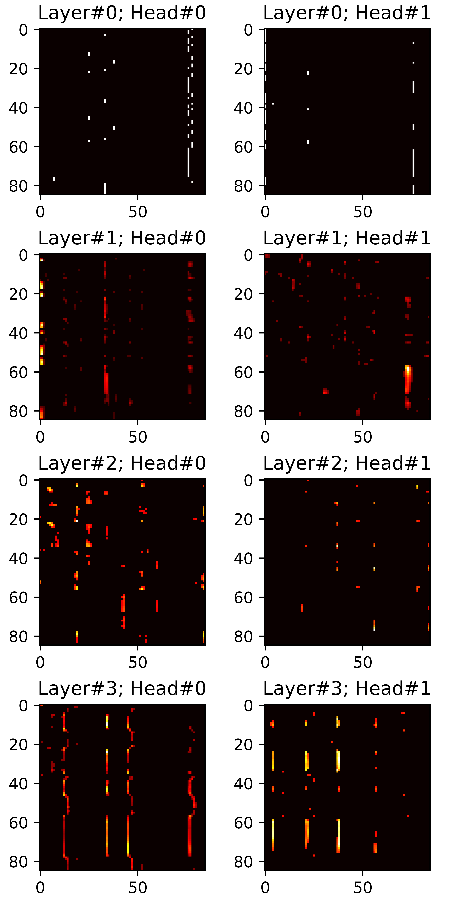
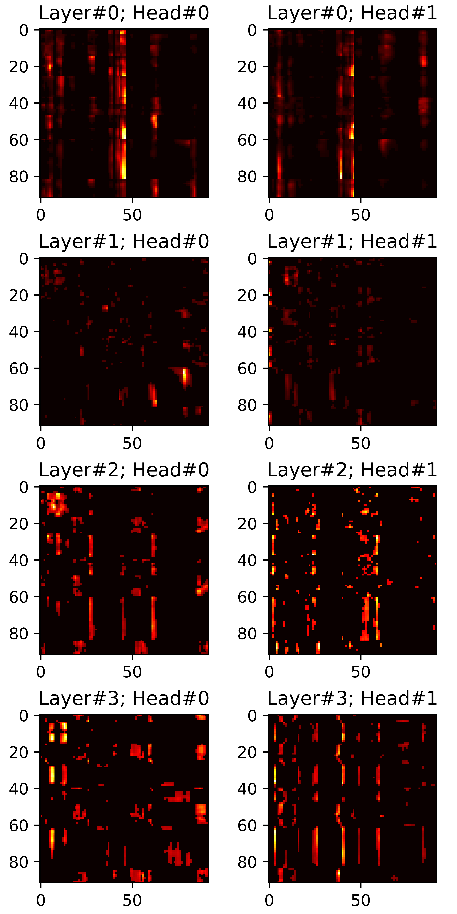
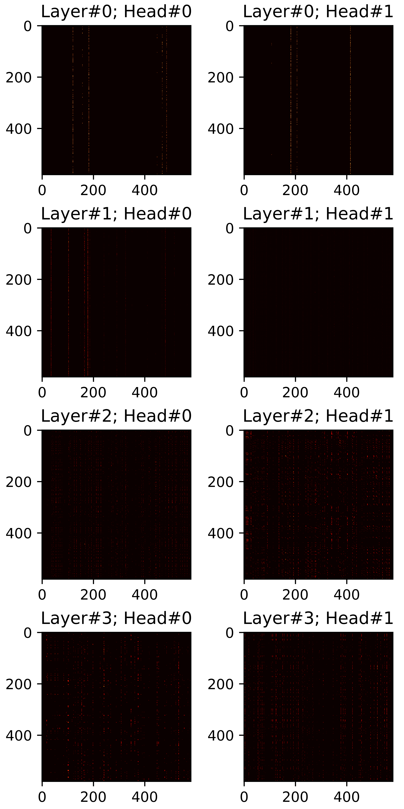
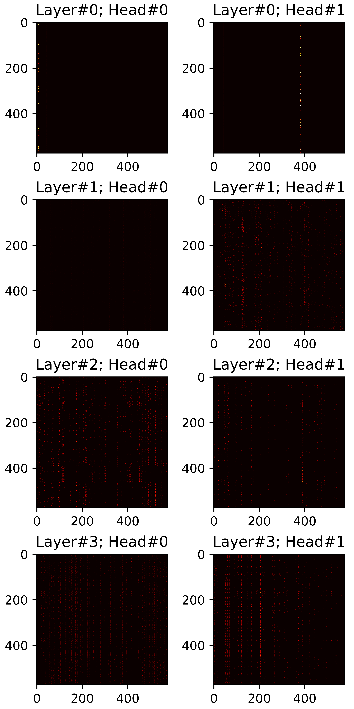
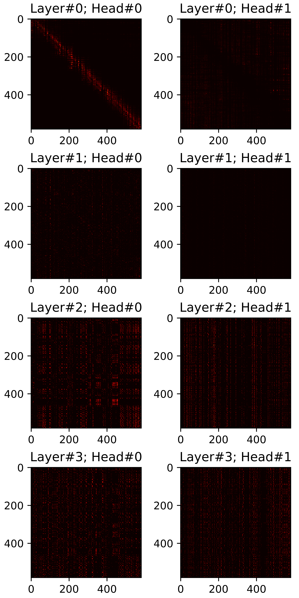

For personalized speech generation, a neural text-to-speech (TTS) model must be successfully implemented with only a limited amount of training data from a target speaker. To this end, the baseline TTS model needs to be amply generalized to out-of-domain data (i.e., target/unseen speaker’s speech). However, approaches to address this out-of-domain generalization problem in TTS have yet to be thoroughly studied. In this work, we propose an effective pruning method for a transformer known as sparse attention, to improve the TTS model’s generalization abilities. In particular, we prune off redundant connections from self-attention layers whose attention weights are below the threshold. To flexibly determine the pruning strength for optimal generalization, we also propose a new differentiable pruning method that allows the model to automatically learn threshold values during training. Evaluations on zero-shot speaker-adaptive TTS verify the effectiveness of our method in terms of voice quality and speaker similarity.
Note. The demo includes the samples from an improved model that maximizes the upper bound on performance, which is not described in the paper. It is denoted as DP(R=45)_UP, which have two improvements compared to DP(R=45):
1. The HiFi-GAN vocoder is further fine-tuned with generated mel-spectrograms of training dataset;
2. SALN is replaced with SC-CNN in the encoder.
Reference Speech |
||||
Synthesized text |
the european court is our only option. |
the difference in the rainbow depends considerably upon the size of the drops, and the width of the colored band increases as the size of the drops increases. |
I'm not interested in coming up with answers. |
we have the support of scottish natural heritage. |
| StyleSpeech | ||||
| VP | ||||
| DP(R=0.50) | ||||
| DP(R=0.45) | ||||
| DP(R=0.40) | ||||
| DP(R=0.45)_UP | ||||
| Ground Truth | ||||
| GT mel + Voc. |
Synthesized text |
a police inquiry began about two weeks before the general election. |
that was a gold medal for certain. | it also has a good labour supply. |
the new system will be marketed this summer. |
| DP(R=0.45) | ||||
| w/o \({SM}_{hard}\) | ||||
| w/o \(\mathcal{L}_{sp}\) |
In this section, we visualize all attention maps from the mel-spectrogram decoder varying the sparsity ratio \(R\). In particular, we plot pruned (masked) attention heads in inference phase. Reference audios are randomly selected from VCTK dataset. The transcript used for synthesis are provided below each plot.
\(R=0.40\) |
\(R=0.45\) |
\(R=0.50\) |
|  |  |  |
\(R=0.40\) |
\(R=0.45\) |
\(R=0.50\) |
|  |  |  |
\(R=0.40\) |
\(R=0.45\) |
\(R=0.50\) |
|  |  |  |